Soluciones integrales en contabilidad, derecho y planeación tributaria para empresas en Medellín, Envigado y todo Antioquia. Apoyo sólido y confiable para el logro de sus objetivos.

Acompañamiento integral para personas naturales y jurídicas en Antioquia en las áreas más críticas de su operación.
Elaboración y revisión de contratos comerciales, civiles y laborales para empresas en Medellín y Antioquia. Representación judicial en litigios civiles, laborales y comerciales. Asesoría en derecho laboral, seguridad social, cobro de cartera y asuntos corporativos para personas naturales y jurídicas.
Tercerización de servicios contables y tributarios para empresas en Medellín, Envigado y Antioquia. Preparación de estados financieros bajo estándares internacionales NIIF. Planeación tributaria estratégica, liquidación y presentación de impuestos nacionales y territoriales ante la DIAN.
Valoración de empresas y proyectos de inversión en Colombia. Planeación financiera corporativa, estrategias de coberturas cambiarias y derivados financieros para minimizar riesgos. Consultoría financiera especializada para pymes y grandes empresas en Antioquia.
Gestión integral de nómina, liquidación de prestaciones sociales y parafiscales para empresas en Colombia.
Registro, renovación y actualización mercantil ante la Cámara de Comercio. Constitución de sociedades SAS y otros tipos societarios.
Acompañamiento continuo en asuntos legales, contables y tributarios para su empresa en Medellín y Antioquia.
BS Asesores S.A.S. es una firma colombiana de asesoría legal, contable y tributaria con sede en Envigado, al servicio de empresas y personas naturales en todo Antioquia. Ofrecemos soluciones integrales que trascienden el cumplimiento regulatorio con un apoyo sólido y confiable que les ayude al logro de sus objetivos.
Atendemos clientes en todo el Área Metropolitana del Valle de Aburrá, incluyendo Medellín, Envigado, Itagüí, Sabaneta, Bello, Copacabana y demás municipios de Antioquia. Nuestro equipo de contadores públicos y abogados está comprometido con brindar asesoría personalizada y de calidad.
Profesionales altamente capacitados en Derecho y Contaduría Pública, especializados en materia civil, laboral, comercial, tributaria, financiera y contable.
Trascendemos el cumplimiento regulatorio para brindar apoyo que impulse el logro de sus objetivos empresariales.
Acompañamiento eventual y permanente en asuntos legales, contables y tributarios para su empresa.
Encuentra respuestas a las preguntas más comunes sobre nuestros servicios en Antioquia.
BS Asesores S.A.S. ofrece servicios integrales de asesoría contable, legal y tributaria para empresas y personas naturales en Antioquia. Nuestros servicios principales incluyen: asesoría legal (contratos, litigios civiles, laborales y comerciales, derecho laboral y seguridad social), asesoría contable y tributaria (outsourcing contable, estados financieros bajo NIIF, planeación tributaria, liquidación de impuestos ante la DIAN), asesoría financiera (valoración de empresas, planeación financiera, coberturas cambiarias), outsourcing de nómina, registro mercantil ante la Cámara de Comercio y consultoría permanente.
Nuestra sede principal está ubicada en Envigado, Antioquia, en la dirección CR 37 No. 46F Sur 101. Atendemos clientes en todo el Área Metropolitana del Valle de Aburrá, incluyendo Medellín, Envigado, Itagüí, Sabaneta, Bello, Copacabana y demás municipios de Antioquia. También brindamos asesoría a empresas en todo el territorio colombiano de manera virtual. Nuestro horario de atención es de lunes a viernes de 8:00 a.m. a 6:00 p.m.
El costo de un contador público en Medellín varía según el tipo de servicio, la complejidad de la contabilidad y el tamaño de la empresa. En BS Asesores ofrecemos planes de outsourcing contable adaptados a las necesidades de cada cliente, desde pequeñas empresas hasta grandes compañías. Le invitamos a contactarnos para una consulta sin compromiso donde evaluamos su situación particular y le presentamos una propuesta ajustada a su presupuesto y necesidades contables y tributarias.
El outsourcing contable es la tercerización de los servicios de contabilidad de su empresa a una firma especializada como BS Asesores. En lugar de contratar un contador interno, usted obtiene un equipo completo de profesionales contables y tributarios. Las principales ventajas son: reducción de costos laborales, acceso a un equipo multidisciplinario de contadores públicos certificados, cumplimiento oportuno de obligaciones ante la DIAN, estados financieros precisos bajo estándares internacionales NIIF, y la tranquilidad de tener su contabilidad al día. Conozca más sobre nuestro servicio de asesoría contable.
La declaración de renta en Colombia se presenta ante la DIAN según el calendario tributario establecido cada año. Tanto personas naturales como jurídicas deben verificar si están obligadas a declarar según sus ingresos, patrimonio y otros criterios. El proceso incluye: recopilar certificados de ingresos, retenciones y patrimonio; calcular la renta líquida gravable; aplicar las tarifas vigentes; y presentar electrónicamente ante la DIAN. En BS Asesores le ayudamos con todo el proceso de declaración de renta, planeación tributaria y optimización fiscal legal en Medellín y Antioquia.
La planeación tributaria es una estrategia legal que permite a empresas y personas naturales optimizar su carga impositiva aprovechando los beneficios, deducciones y exenciones que establece la ley colombiana. No se trata de evadir impuestos sino de planificar inteligentemente para pagar lo justo. Los beneficios incluyen: reducción legal de la carga tributaria, mejor flujo de caja, prevención de sanciones por incumplimiento, y aprovechamiento de incentivos fiscales. Nuestros asesores tributarios en Medellín le ayudan a diseñar una estrategia fiscal personalizada.
Para crear una empresa en Colombia, especialmente una SAS (Sociedad por Acciones Simplificada), los requisitos principales son: documento de identidad de los socios, definir el nombre y objeto social de la empresa, elaborar los estatutos sociales, registrar la empresa ante la Cámara de Comercio, obtener el NIT ante la DIAN, inscribir los libros contables y abrir una cuenta bancaria empresarial. En BS Asesores le acompañamos en todo el proceso de registro mercantil y constitución de su empresa en Envigado, Medellín y Antioquia.
Una persona natural es un individuo que ejerce actividades comerciales a título personal, respondiendo con su patrimonio personal. Una persona jurídica es una entidad creada legalmente (como una SAS, LTDA o SA) que tiene patrimonio propio separado del de sus socios. Las principales diferencias son: la responsabilidad patrimonial (limitada en persona jurídica), los regímenes tributarios aplicables, las obligaciones contables y la capacidad de contratar. En BS Asesores le asesoramos sobre cuál estructura es más conveniente para su negocio en Antioquia.
El outsourcing de nómina consiste en delegar la gestión integral de la nómina de su empresa a una firma especializada. En BS Asesores nos encargamos de: cálculo y liquidación de salarios, prestaciones sociales (prima, cesantías, vacaciones), aportes a seguridad social y parafiscales (salud, pensión, ARL, caja de compensación), retención en la fuente sobre salarios, elaboración de desprendibles de pago y reportes para la contabilidad. Conozca más sobre nuestro servicio de outsourcing de nómina en Medellín y Antioquia.
El calendario tributario de la DIAN para 2026 establece los plazos para la presentación de las diferentes declaraciones de impuestos en Colombia. Las fechas varían según el último dígito del NIT y el tipo de declaración (renta, IVA, retención en la fuente, ICA, entre otros). En BS Asesores le ayudamos a identificar sus obligaciones tributarias específicas y a cumplir con todos los plazos establecidos por la DIAN para evitar sanciones e intereses moratorios. Contáctenos para una revisión de su calendario fiscal personalizado.
Un abogado laboral en Medellín es fundamental para proteger los intereses de su empresa y garantizar el cumplimiento de la normatividad laboral colombiana. Los principales servicios que ofrecemos incluyen: elaboración y revisión de contratos laborales, asesoría en despidos y liquidaciones, representación en procesos judiciales ante juzgados laborales, manejo de seguridad social, resolución de conflictos laborales y asesoría en reglamento interno de trabajo. Contar con asesoría legal preventiva evita costosos litigios y sanciones del Ministerio de Trabajo.
La actualización del registro mercantil ante la Cámara de Comercio es una obligación anual para todas las empresas en Colombia. El proceso incluye: renovación de la matrícula mercantil (durante los tres primeros meses del año), actualización de información financiera, y registro de cualquier cambio en la empresa (dirección, actividad económica, socios, capital). En BS Asesores le asistimos con todo el proceso de registro mercantil en Envigado y Antioquia, asegurando que su empresa cumpla con todas las obligaciones legales vigentes.
Escríbenos y agenda una consulta sin compromiso.